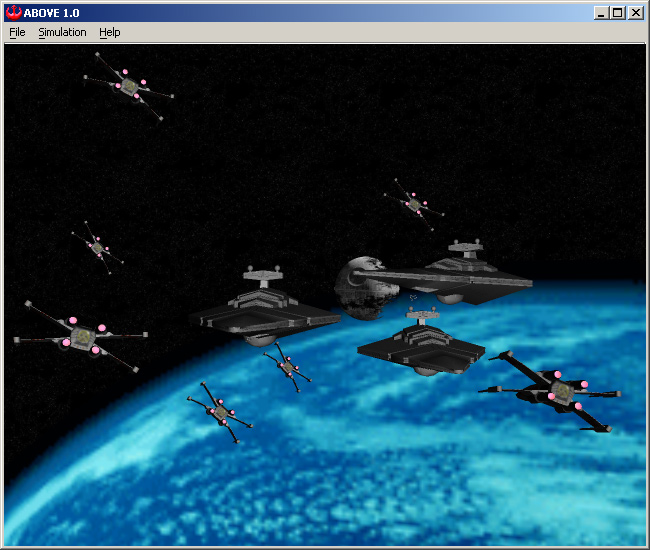
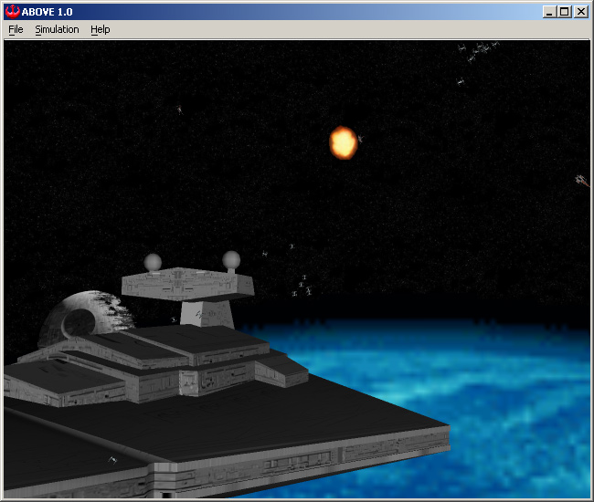
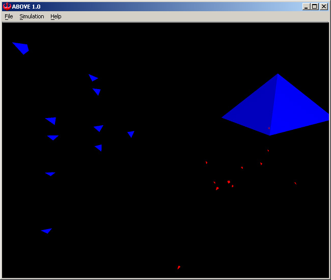
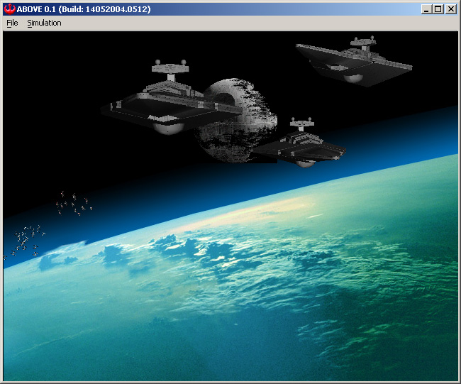

 ABOVE gleich nach dem Start.

 Vereinfachte Darstellung für flüssige Anzeige auf weniger leistungsfähigen Rechnern (oder sehr viele Raumjäger...)
 14. Mai 2004: Erste Version der Unterstützung für Planeten
ABOVE © 2004 T. Gerstendörfer, T. Hellstern, L. Kellenberger, M. Mühlebach, Fachhochschule Aargau.